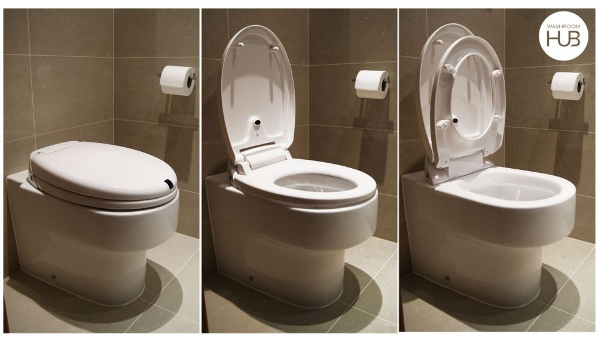

TS LIFT-UP! : Fully motorized lid and seat open/close mechanism. The seat can be easily slid off for easy cleaning and coated with anti-bacterial Silver Technology for added protection against germs. TS Lift-UP! will lift up mechanically when you approach by stepping on the pedal; by stepping on the clutch once a will lift the toilet seat for male use, and both the lid and seat will close automatically 25 seconds after you walk away. No more falling into the toilet bowl or being lectured about putting the place down over coffee in the morning.
Prevent the spread of germs and keep the peace at home. Toilet seats often have a lid. This lid is frequently left open. It can be closed to prevent small items from falling in, to reduce odors, for aesthetic purposes, or to provide a chair in the toilet room. It solves a major issue between men and women that is when the lid is down it can be used as a seat. The seat lifted when a man stands to urinate, or while cleaning the toilet. The issue of men leaving the seat up or putting it back down after use (mainly for the benefit of women), is a perennial topic of discussion; with it often being argued that leaving the toilet seat up is more efficient for men, but putting it down is more considerate of women. TS Lift UP!, came a long way to be developed since the company started based on integrating something that was already created like the garbage can. The problem started by knowing how we will incorporate the system in the toilet. It took the team around one year and two months to pattern the product and to have all the testing through mechanical engineering to make sure it works and to make sure that it is possible to build. The product was developed in China even though it is an American made product.
